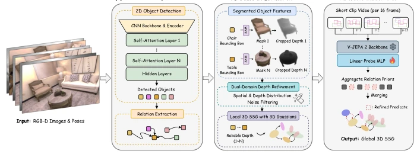

DeWorldSG: Depth-Aware 3D Semantic Scene Graph Generation via World-Model Priors
Seok-Young Kim, Abdelrahman Elskhawy, Taewook Ha, Dooyoung Kim, Eunjae Shin, Benjamin Busam abspdf
论文点评Review
这篇论文给 3D 场景图生成加了点“世界模型”的佐料，试图解决传统方法里物体位置飘忽不定、关系漏判的问题。DeWorldSG 把物体建模成概率 3D 高斯分布，而不是死板的点或框，这点挺聪明，毕竟真实世界哪有那么多精确坐标。它用 V-JEPA 2 这种视频世界模型来补全关系，算是蹭了热点。结果确实漂亮，在 3DSSG 上关系召回率暴涨 77%，听着很爽。但仔细想想，它还是依赖 2D 检测器的稳定性，如果摄像头一抖，物体分类跨帧不一致，图就碎了（见 Fig. 6）。而且“世界模型”在这里更多是个辅助先验，真要是端到端的世界模型决策，这架构还差点火候。总的来说，是个稳健的感知层改进，但别指望它能直接指挥机器人干活，更多是作为下游任务的可靠输入。
...
研究动机Motivation
具身智能和 AR 系统需要理解物体间的空间关系，而不仅仅是识别物体。现有的 3D SSG 生成方法，如基于点云的方法 [42,44,45] 对重建质量太敏感，容易受位姿漂移影响；而基于 2D 提升的方法 [10,13,21] 虽然鲁棒，但往往因为帧间独立推理导致关系缺失或几何不稳定。特别是 FROSS [13] 虽然引入了高斯分布，但缺乏显式的深度分布建模，导致边界深度失真。DeWorldSG 指出根因在于将场景图生成视为独立帧级预测，忽略了时空上下文。真实环境中，物体几何存在不确定性，关系应随时间累积证据而非单次观测。因此，需要一种能处理深度噪声、跨帧融合对象，并利用世界模型先验补全关系的增量式框架。
...
方法Method
DeWorldSG 的整体流程分为三步。首先，从 RGB-D 序列生成帧级 2D 场景图，检测物体并预测关系。接着，核心创新在于“深度感知 3D 高斯表示”。它利用 SAM 生成的掩码引导深度采样，并通过“双域深度细化”（Dual-Domain Depth Refinement, DR）过滤空间域和深度分布域的噪声，消除飞点，得到更稳定的实例级 3D 高斯分布（均值和协方差），而非单一深度值。然后，基于 Hellinger 距离和类别距离进行增量式全局图融合，跨帧合并同一物体。最后，针对关系边，利用 V-JEPA 2 视频世界模型提取时空先验。对于几何邻近的物体对，提取 16 帧视频 clip，通过冻结的 V-JEPA 2 骨干和轻量级探针预测关系分布。当视觉证据熵值高（不确定）时，融合世界模型先验，否则保留视觉预测，以此抑制幻觉关系并增强时空一致性。
...

Fig. 2: Overview of DeWorldSG. Given RGB-D image sequences, DeWorldSG first constructs frame-wise 2D scene graphs by detecting objects and extracting their rela- tionships (a). The detected instances are lifted to depth-aware probabilistic 3D Gaus- sians through mask-guided depth filtering and dual-domain depth refinement (b). Fi- nally, spatiotemporal predicate priors from a video world model are aggregated and fused with visual predictions to incrementally merge local graphs into a globally con- sistent 3D semantic scene graph (c).